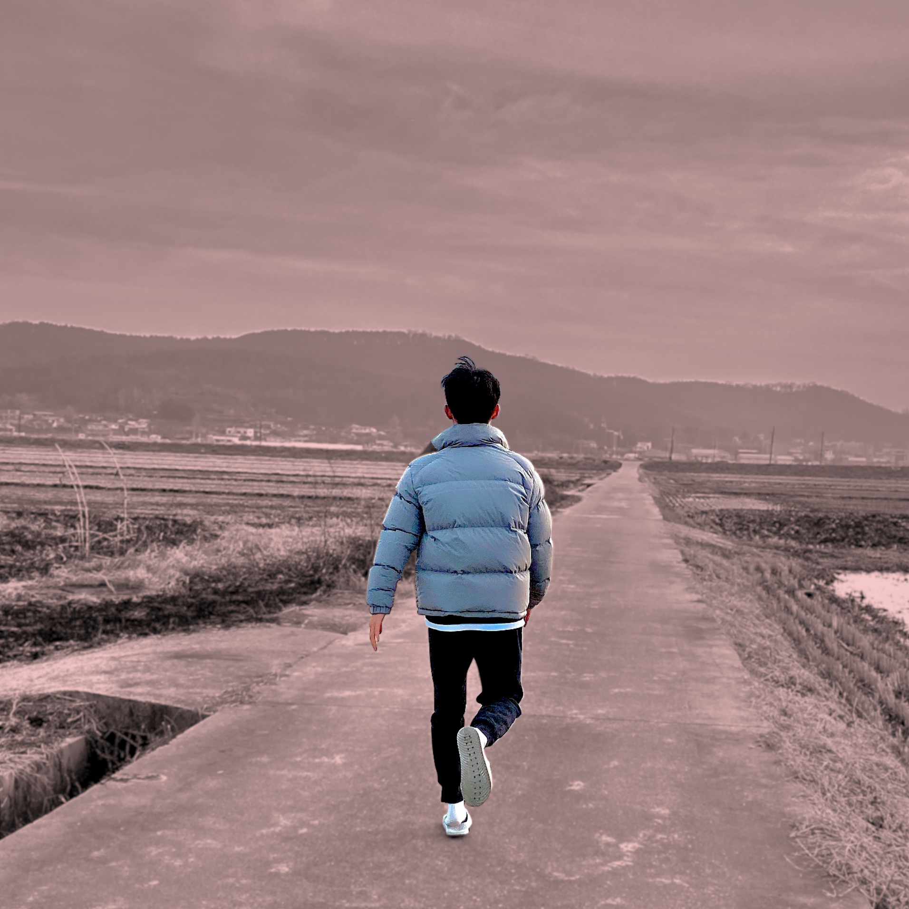

ENFJ
호기심과 정이 많아 금방 친해집니다 :) 겉으로는 내색은 않지만 감성적이에요..! (취급 주의!!)

취미
영상 편집과 디자인을 좋아합니다.
새로운 곳으로 여행하는 것도, 제 생각을 글로 쓰는 것도 좋아해요!

인생관
하는 만큼 된다고 믿습니다!
힘들어도 어제보다 더 나은 나를 만들고 있습니다.
안녕하세요 :) 내일이 기대되는
고현용의 언박싱입니다.
우리는 제품을 구매할 때, 나에게 필요한 것인지 고민하고
상세정보와 후기를 봅니다.
그리고 필요하다고 느끼면 구매를 결심하죠.
저는 이 웹사이트를 통해 저를 확인하시고, 구매를 결정하고
택배 상자를 여는듯한
설렘과 즐거움으로 이어지길 바라며 '언박싱'이라는 콘셉트로 만들어보았습니다.


본격적으로 고현용을 소개합니다!
안녕하세요 고현용입니다. 저는 집보다 밖에서 있는걸 좋아합니다. 밖이 더 넓고 재밌거든요.
어딜 가든 여럿이 있다 보니 자신에 대해 생각해볼 기회가 없었습니다. 생각해보려고도 안 했죠.
그리고 코로나가 유행하고 집에 혼자 있는 시간이 많아지다 보니 어딘가 불안하고 힘들었습니다.
여태까지는 볼 수 없었던 제 모습이 하나둘씩 나오고, 민낯을 본 것 같아 매우 우울했습니다.
'결국은 이거밖에 안 되는 사람이었나', '혼자서 할 수 있는 게 있을까?' 생각에 꼬리를 물게 되고
그렇게 저는 올해를 돌아보며 앞으로의 삶을 그려보기로 했습니다. 시작해볼까요?
#1. 미지의 세상으로 뛰어들다

저는 2020년 1월에 거꾸로캠퍼스에 입학했습니다. 수동적인 입시환경에서 벗어나 '다시 돌아봐도 후회없을 삶'을 살고자 다짐했습니다.
처음엔 시험도 없고, 점수도 없는 자율에 익숙하지 않았습니다. 그리고 내가 주체가 되어 움직인다는 것 자체에도 어색했지만 따라가 보았습니다.
나만의 프로젝트와 팀 프로젝트를 진행하며, '나'와 '우리 팀' 이어서 할 수 있는 것. 그리고 '무엇을, 어떻게, 왜'를 스스로 묻는 '골든서클'을 익혀
프로젝트에 의미와 가치를 만드는 법을 배웠습니다. 그리고 세상엔 다양한 사람들이 있으며 나와 다름을 인정하고 돕는 자세도 배웠습니다.
#2. 세상과 마주하다
첫 모듈(거캠의 학기 단위, 약 2개월)이 끝나고 전문적인 비즈니스 수업(I-LAB)을 선택했습니다.
이곳은 '루트임팩트'라는 소셜벤처 기업이며, 사회적 가치를 창출하는 스타트업을 모아놓은 '헤이그라운드 서울숲'에서 공부했습니다.
거꾸로캠퍼스 전문교육 랩 중 가장 난이도가 있다는 소문대로, 새롭게 배우는 용어와 개념을 바탕으로 매일 과제를 하고 프로젝트를 진행했습니다.
페르소나, KPI, 비즈니스 모델 캔버스 등 사업에 필요한 툴을을 배우고 3시간 프로젝트, 3일 프로젝트, 실제 기업과 비즈니스 제안까지
짧은 시간 동안 많은 일정과 목표를 달성했습니다. 사회적 약자를 돕는 소셜임팩트 회사에 엽서도 팔아보고, 텀블러를 업사이클링해 판매하고
'빅이슈'(홈리스의 자활을 돕는 소셜기업) 매거진의 광고를 판매하는 프로젝트를 마지막으로 아이랩을 이수했습니다.
아이랩에서 배운 내용은 전혀 새로운 내용이었고, 일정도 빡빡해 몸도 마음도 힘들었었습니다. 솔직히 말하면 포기하고 싶었습니다.
매일 지하철을 타고 등교하고, 따라가기 벅찬 수업 진도에, 팀원들과 잦은 언쟁 등 한 모듈만 거친 저로서는 너무 큰 변화였습니다.
첫 일 주일을 지내며 기숙사에서 많이 울면서 '이정도밖에 안되는 사람인가?' 생각하다 보니 속이 타들어 갔습니다.
반면에 힘든 시간을 거치고 나서야 비로소 제가 변했다는 것을 느꼈습니다. 당시의 저로서 감당하기 힘들었지만 좋은 친구들과 선생님이 함께였기에
버텨낼 수 있었고, 내가 움직여야 세상도 바뀐다는 것을 깨달았습니다. 그리고 세상은 아무도 날 챙겨주지 않는다는 점도 배웠습니다.
이 경험을 바탕으로 더 힘든 시련이 찾아와도 웃으며 고난을 즐기는 '악'이 생겼습니다.
'고통 속에서 성장한다.' 2모듈에서 가장 크게 깨달은 점이었습니다.
#3. 내가 만드는 세상
아이랩에서 돌아오고 기존 팀에 들어갈 좋은 기회가 생겨 유기견 문제를 다루는 'PUGGY'팀에 들어가게 되었습니다.
평소 영상 제작에 관심이 있고 좋아하던 제가 '영상 제작' 인원으로 활동하는데 너무나 만족스러웠습니다.
그리고 아이랩에서 배웠던 페르소나 설정, 비즈니스 모델 만들기, 제안서 이메일 작성 등 비즈니스 툴을 활용해보았습니다.
그렇게 Cj 도너스캠프에 '청소년 콘텐츠 제작팀'으로 뽑히게 되어 지원금을 받으며 팀 활동을 이어나갔습니다.
저번 모듈과는 달라진 나를 보여주고, 신념을 지키기 위해 그 어느 때보다 나서서 노력하니 팀 분위기와 성과도 좋아졌습니다.
나만의 세상을 만들어가며 지켜야 할 부분과 이야기를 만들어나가는 과정이 정말 즐겁고 달았습니다.
#4. 더 넓은곳으로 도약하기
3모듈에 문제정의를 끝내고 본격적으로 솔루션을 만들기 시작했습니다. 유기견 보호소에 이메일과 전화를 돌리고
도너스캠프 영상을 제작하며 콘텐츠를 다뤄보는 능력과 함께, 새로운 마음으로 다시 시작하는 의미에서
기존의 'PUGGY'에서 '길뭉치 스튜디오'로
리뉴얼하기도 했습니다.
그리고 '다시사랑받개'에 방문해 유기견 '와루'의 이야기와 입양 홍보 영상을 제작하고 입양 보냈습니다.
그리고 코딩 전문교육 랩(C-LAB)에 들어가 팀 웹사이트와 개인 웹사이트를 제작했습니다.
Html과 Css를 기초로 배운 뒤, Java를 익히며 웹 제작에 전반적인 부분을 만들 수 있게 되었습니다.
교육과정 초반엔 생소한 개념과 용어에 머리가 아팠고, 나와는 인연이 아닌가 보다 하고 열심히 참여하지 않았습니다.
그렇게 시간을 보내고 나니 실전 웹사이트 제작기까지 오게 되었고, 위기감을 느끼고 나서야 정신 차리고 코딩 공부를 시작했습니다.
배운 내용을 다시 정리하고 참고할만한 자료들을 모으면서 배우다 보니 다시금 2모듈 아이랩 때가 생각났습니다.
나와는 전혀 맞지 않는다고 생각했던 분야가. 많이 듣고 보고 학습하다 보니 어느새 제 것이 되어있었습니다.
또 한 번의 고난을 다시 이겨내고 성과를 이뤄낸 제 모습에 깨달은 점이 있었습니다. '하는 만큼 된다'를 몸소 느끼고 열심히 사는 계기가 되었습니다.
#n. 앞으로의 이야기

'길뭉치 스튜디오'팀은 캡스톤(문제해결 프로젝트)으로 올라가 실제 유기견 문제해결에 힘쓸 예정입니다.
팀 안에서의 역할과 능력에 맞는 학습을 하며 폭넓은 배움을 이어나고 지속해서 사회문제해결에 관심을 두고 진출할 예정입니다.
앞으로 더 많은 경험과 깨달음을 얻을 생각에 내일이 기대됩니다. 어떤 일이든 극복할 수 있다는 믿음으로 매일매일 열심히 살겠습니다.
여기까지 읽어주셔서 감사합니다. 저의 이야기를 보면서 어떤 생각이 드셨는지 궁금합니다. 이다음 페이지에 제가 해왔던 프로젝트가 자세히 있으니
같이 봐주시면 감사하겠습니다. 여기까지 내일이 기대되는 고현용이었습니다이었습니다! 감사합니다 :)